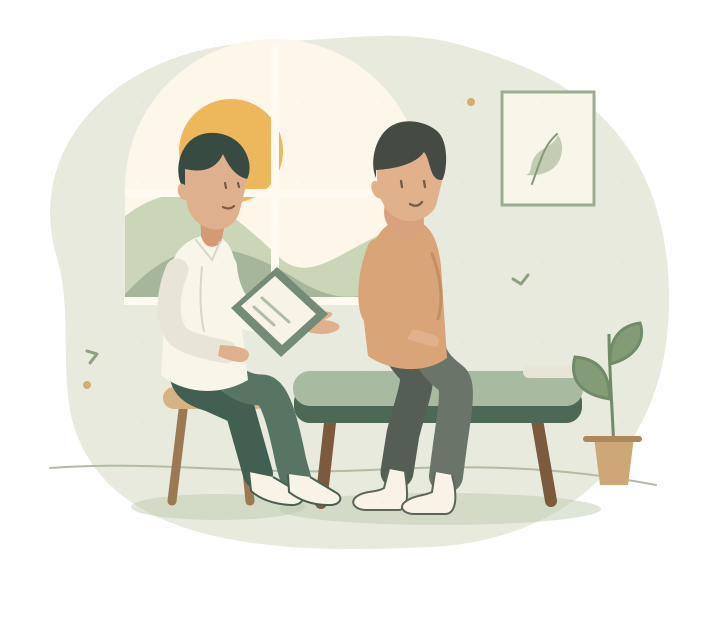
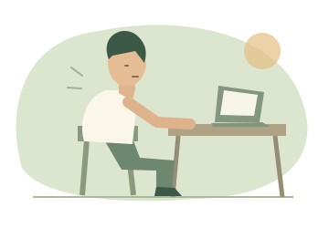
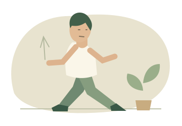
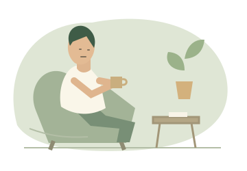
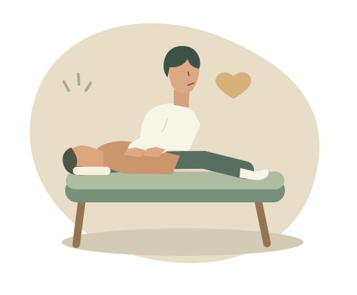
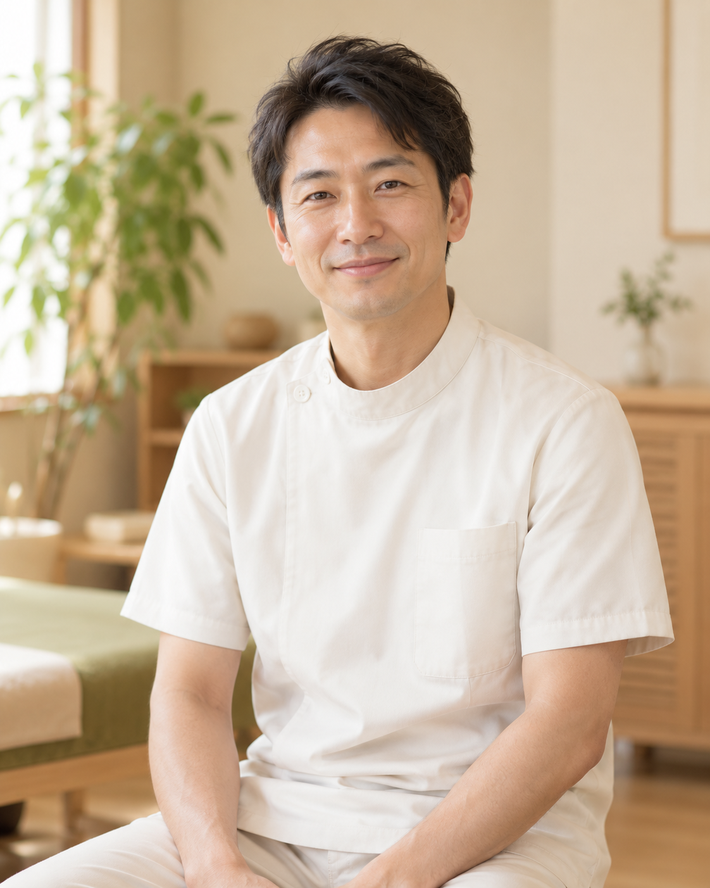

OUR APPROACH
大切にしていること
あなたの毎日に、
寄り添う整体を。
「どんな施術をするのだろう」
「こんなことを相談してもいいのかな」
初めての場所には、少し不安があるもの。
だからこそ、からだのことだけでなく、
日々の過ごし方や、気になっていることを伺います。
お話の内容とからだの状態をもとに、施術の内容を説明。
納得していただきながら進めることを大切にします。
※ 院の方針を確認して整える仮原稿です。
たとえば、こんなときに。

デスクワークで、
からだがこわばる
姿勢や日々の動きが
気になる
からだをいたわる
時間をつくりたい
対応できるお悩みは、事前にご相談ください。
ABOUT OUR CARE
施術について
知ることから、
はじめましょう。
何をするのか、どんなふうに進むのか。
安心して相談できるよう、わかりやすく。

一人ひとりの状態を確かめ、
施術内容をご案内します。
まずはお悩みや生活習慣を伺い、姿勢や動きなどを確認。そのうえで、施術の目的や方法をご説明。
不安な点も、遠慮なくお伝えください。具体的な手技や対応範囲は、院の方針に合わせて掲載します。
気になることを、よくあるご質問でこのサイトは医療上の診断や治療効果を保証するものではありません。体調や症状に不安がある方は、医療機関にご相談ください。
YOUR FIRST VISIT
ご来院の流れ
初めての方も、
慌てずスムーズに。
ご予約からお帰りまでの流れをご紹介します。
※ 実際のご案内に合わせて調整する仮の流れです。
- STEP 01
ご予約
外部の予約サイトから、ご都合のよい日時をお選びいただく予定です。
- STEP 02
お話・状態の確認
気になることや日々の過ごし方を伺い、からだの状態を確認します。
- STEP 03
ご説明・施術
内容をご説明し、確認しながら進めます。不安な点はいつでもお伝えください。
- STEP 04
振り返り・ご案内
施術後の状態を一緒に確認し、日常で気をつけたいことなどをお伝えします。
服装・持ち物について
動きやすい服装、お着替えの有無、初回の所要時間は、院の運用を確認して掲載します。

施術者のご紹介
気になることを、
お聞かせください。
ごあいさつ例文はじめまして。日々の暮らしの中で気になっていることや、施術への不安など、どんな小さなことでもお聞かせください。
お話を伺い、内容をわかりやすくお伝えしながら、一緒に考えることを大切にしたいと思っています。
QUESTIONS & ANSWERS
Q.初めてでも利用できますか？
Q.施術の刺激が心配です。
Q.どのくらい時間がかかりますか？
Q.通院中でも相談できますか？
Q.予約の変更・キャンセルはできますか？
ご予約・お問い合わせ
からだのこと、
話してみませんか。
ご予約は、外部の予約サイトから。
ご不明な点は、お電話またはメールでお問い合わせいただけます。
お電話でのお問い合わせ
電話番号 確認中メールでのお問い合わせ
メールアドレス 確認中アクセス・営業のご案内
整体院 ［院名確認中］
チラシを見てお越しになる方へ。
院までの道順や目印も、こちらにご案内します。
- 所在地
- 住所を確認して掲載します
- アクセス
- 最寄り駅・道順・駐車場の有無を確認中
- 営業時間
- 受付時間・定休日を確認中
- ご予約
- 契約済みの外部予約サイトへのリンクを設置予定
- お支払い
- お支払い方法を確認中